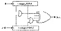
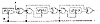

| Previous | Table of Contents | Next |
Gollmann Cascade
The Gollmann cascade (see Figure 16.16), described in [636,309], is a strengthened version of a stop-and-go generator. It consists of a series of LFSRs, with the clock of each controlled by the previous LFSR. If the output of LFSR-1 is 1 at time t - 1, then LFSR-2 clocks. If the output of LFSR-2 is 1 at time t - 1, then LFSR-3 clocks, and so on. The output of the final LFSR is the output of the generator. If all the LFSRs have the same length, n, the linear complexity of a system with k LFSRs is

Figure 16.15 Multispeed inner-product generator.
Cascades are a cool idea: They are conceptually very simple and they can be used to generate sequences with huge periods, huge linear complexities, and good statistical properties. They are vulnerable to an attack called lock-in [640]. This is a technique by which a cryptanalyst reconstructs the input to the last shift register in the cascade, then proceeds to break the cascade register by register. This is a serious problem in some situations and weakens the effective key length of the algorithm, but precautions can be taken to minimize the attack.
Further analysis has indicated that the sequence approaches random as k gets larger [637,638,642,639]. Based on recent attacks on short Gollmann cascades [1063], I recommend using a k of at least 15. You’re better off using more LFSRs of shorter length than fewer LFSRs of longer length.
Shrinking Generator
The shrinking generator [378] uses a different form of clock control than the previous generators. Take two LFSRs: LFSR-1 and LFSR-2. Clock both of them. If the output of LFSR-1 is 1, then the output of the generator is LFSR-2. If the output of LFSR-1 is 0, discard the two bits, clock both LFSRs, and try again.
This idea is simple, reasonably efficient, and looks secure. If the feedback polynomials are sparse, the generator is vulnerable, but no other problems have been found. Even so, it’s new. One implementation problem is that the output rate is not regular; if LFSR-1 has a long string of zeros then the generator outputs nothing. The authors suggest buffering to solve this problem [378]. Practical implementation of the shrinking generator is discussed in [901].
Self-Shrinking Generator
The self-shrinking generator [1050] is a variant of the shrinking generator. Instead of using two LFSRs, use pairs of bits from a single LFSR. Clock a LFSR twice. If the first bit in the pair is 1, the output of the generator is the second bit. If the first bit is 0, discard both bits and try again. While the self-shrinking generator requires about half the memory space as the shrinking generator, it is also half the speed.
While the self-shrinking generator also seems secure, it still has some unexplained behavior and unknown properties. This is a very new generator; give it some time.

Figure 16.16 Gollmann cascade.
A5 is the stream cipher used to encrypt GSM (Group Special Mobile). That’s the non-American standard for digital cellular mobile telephones. It is used to encrypt the link from the telephone to the base station. The rest of the link is unencrypted; the telephone company can easily eavesdrop on your conversations.
A lot of strange politics surrounds this one. Originally it was thought that GSM’s cryptography would prohibit export of the phones to some countries. Now some officials are discussing whether A5 might harm export sales, implying that it is so weak as to be an embarrassment. Rumor has it that the various NATO intelligence agencies had a catfight in the mid-1980s over whether GSM encryption should be strong or weak. The Germans wanted strong cryptography, as they were sitting near the Soviet Union. The other countries overruled them, and A5 is a French design.
We know most of the details. A British telephone company gave all the documentation to Bradford University without remembering to get them to sign a nondisclosure agreement. It leaked here and there, and was eventually posted to the Internet. A paper describing A5 is [1622]; there is also code at the back of this book.
A5 consists of three LFSRs; the register lengths are 19, 22, and 23; all the feedback polynomials are sparse. The output is the XOR of the three LFSRs. A5 uses variable clock control. Each register is clocked based on its own middle bit, XORed with the inverse threshold function of the middle bits of all three registers. Usually, two of the LFSRs clock in each round.
There is a trivial attack requiring 240 encryptions: Guess the contents of the first two LFSRs, then try to determine the third LFSR from the keystream. (Whether this attack is actually feasible is under debate, but a hardware key search machine currently under design should resolve the matter soon [45].)
Nonetheless, it is becoming clear that the basic ideas behind A5 are good. It is very efficient. It passes all known statistical tests; its only known weakness is that its registers are short enough to make exhaustive search feasible. Variants of A5 with longer shift registers and denser feedback polynomials should be secure.
This algorithm is brought to you by Hughes Aircraft Corp. They put it in army tactical radios and direction-finding equipment for sale to foreign militaries. It was designed in 1986 and called XPD, for Exportable Protection Device. Later it was renamed KPD—Kinetic Protection Device—and declassified [1037,1036].
The algorithm uses a 61-bit LFSR. There are 210 different primitive feedback polynomials, which were approved by the NSA. The key selects one of these polynomials (they are all stored in ROM somewhere), as well as the initial state of the LFSR.
It has eight different nonlinear filters, each of which has six taps from the LFSR and which produces 1 bit. The bits combine to generate a byte, which is used to encrypt or decrypt the datastream.
This algorithm looks pretty impressive, but I doubt it is. The NSA allows export, so there must be some attack on the order of 240 or less. What is it?
Nanoteq is a South African electronics company. This is their algorithm that has been fielded by the South African police to encrypt their fax transmissions, and presumably for other uses as well.
The algorithm is described, more or less, in [902,903]. It uses a 127-bit LFSR with a fixed feedback polynomial; the key is the initial state of the feedback register. The 127 bits of the register are reduced to a single keystream bit using 25 primitive cells. Each cell has five inputs and one output:
Each input of the function is XORed with some bit of the key. There is also a secret permutation that depends on the particular implementation, and is not detailed in the papers. This algorithm is only available in hardware.
Is this algorithm secure? I doubt it. During the transition to majority rule, embarrassing faxes from one police station to another would sometimes turn up in the liberal newspapers. These could easily have been the results of U.S., U.K., or Soviet intelligence efforts. Ross Anderson took some initial steps towards cryptanalyzing this algorithm in [46]; I expect more results to come soon.
| Previous | Table of Contents | Next |
){kind=link}
){kind=link}
){kind=link}
){kind=link}